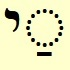

!שָׁלוֹםalefbet/shalom
This page has the information you need to pronounce words in Biblical Hebrew correctly.
In this website you can click on any Hebrew word to hear how it is pronounced.
Biblical Hebrew Consonants - the alefbet
- The Hebrew alphabet is called the alefbet - the names of the first 2 letters
א (alef) and בּ (bet).
- In English, the alphabet includes both
- consonants (b,c,d,f,g,h,j,k,l,m,n,p,q,r,s,t,v,w,x,y,z) and
- vowels (a,e,i,o,u)
- The Hebrew alefbet includes only consonants.
- English reads from left to right →
- Hebrew reads from right to left ←
Click on a Hebrew letter to hear its sound.
Click on below to hear all sounds. (Click on to stop)
אalefbet_consonants_and_vowels/silence
silent
Alefalefbet_consonants_and_vowels/alef
בּalefbet_consonants_and_vowels/b
b
Betalefbet_consonants_and_vowels/bet
בalefbet_consonants_and_vowels/v
v
Vetalefbet_consonants_and_vowels/vet
גalefbet_consonants_and_vowels/g
g
Gimelalefbet_consonants_and_vowels/gimel
דalefbet_consonants_and_vowels/d
d
Daletalefbet_consonants_and_vowels/dalet
הalefbet_consonants_and_vowels/h
h
Hehalefbet_consonants_and_vowels/heh
וalefbet_consonants_and_vowels/v
v
Vavalefbet_consonants_and_vowels/vav
זalefbet_consonants_and_vowels/z
z
Zayinalefbet_consonants_and_vowels/zayin
חalefbet_consonants_and_vowels/ch
ch
Chetalefbet_consonants_and_vowels/chet
טalefbet_consonants_and_vowels/t
t
Tetalefbet_consonants_and_vowels/tet
יalefbet_consonants_and_vowels/y
y
Yodalefbet_consonants_and_vowels/yod
כּalefbet_consonants_and_vowels/k
k
Kafalefbet_consonants_and_vowels/kaf
כalefbet_consonants_and_vowels/ch
ch
Chafalefbet_consonants_and_vowels/chaf
ךalefbet_consonants_and_vowels/ch
ch
Final
Chafalefbet_consonants_and_vowels/final_chaf
לalefbet_consonants_and_vowels/l
l
Lamedalefbet_consonants_and_vowels/lamed
מalefbet_consonants_and_vowels/m
m
Memalefbet_consonants_and_vowels/mem
םalefbet_consonants_and_vowels/m
m
Final
Memalefbet_consonants_and_vowels/final_mem
נalefbet_consonants_and_vowels/n
n
Nunalefbet_consonants_and_vowels/nun
ןalefbet_consonants_and_vowels/n
n
Final
Nunalefbet_consonants_and_vowels/final_nun
סalefbet_consonants_and_vowels/s
s
Samechalefbet_consonants_and_vowels/samech
עalefbet_consonants_and_vowels/silence
silent
Ayinalefbet_consonants_and_vowels/ayin
פּalefbet_consonants_and_vowels/p
p
Peialefbet_consonants_and_vowels/pei
פalefbet_consonants_and_vowels/f
f
Feialefbet_consonants_and_vowels/fei
ףalefbet_consonants_and_vowels/f
f
Final
Feialefbet_consonants_and_vowels/final_fei
צalefbet_consonants_and_vowels/ts
ts
Tzadialefbet_consonants_and_vowels/tzadi
ץalefbet_consonants_and_vowels/ts
ts
Final
Tzadialefbet_consonants_and_vowels/final_tzadi
קalefbet_consonants_and_vowels/k
k
Kufalefbet_consonants_and_vowels/kuf
רalefbet_consonants_and_vowels/r
r
Reshalefbet_consonants_and_vowels/resh
שׁalefbet_consonants_and_vowels/sh
sh
Shinalefbet_consonants_and_vowels/shin
שׂalefbet_consonants_and_vowels/s
s
Sinalefbet_consonants_and_vowels/sin
תalefbet_consonants_and_vowels/t
t
Tavalefbet_consonants_and_vowels/tav
א:silence| בּ:b| ב:v| ג: g|ד:d| ה: h|ו:v| ז:z| ח:ch| ט :t|י:y| כּ: k|כ:ch| ך:ch| ל : l
|מ: m|ם :m| נ: n|ן:n| ס:s| ע :silence| פּ:p| פ:f| ף: f|צ:ts| ץ:ts| ק:k| ר: r|שׁ:sh| שׂ:s| ת :t
source: consonants-plus-sounds |id: consonants-list|arrow
| colorClass: consonant-color |audio: alefbet_consonants_and_vowels | hebrewclass:hebrew33
Some people pronounce some of the consonants differently- see
alefbet+ for alternative pronunciation of some consonants.
More about consonants:
Dots in consonants
בּ:b|ב:v|-:-|כּ:k|כ:ch|-:-|פּ:p|פ:f
source: dots-in-consonants |arrow| colorClass: consonant-color
|audio: alefbet_consonants_and_vowels
Consonants often have dots in them, for example
ּקּּ alefbet_consonants_and_vowels/k
דּ alefbet_consonants_and_vowels/d
The only ones where this affects the pronunciation are
בalefbet_consonants_and_vowels/v ,
כalefbet_consonants_and_vowels/ch and
פalefbet_consonants_and_vowels/f.
In all other consonants, the dot does not change the pronunciation.
When בalefbet_consonants_and_vowels/v ,
כalefbet_consonants_and_vowels/ch or
פalefbet_consonants_and_vowels/f
is the first letter in a word, it usually has a dot:
בּalefbet_consonants_and_vowels/b,
כּalefbet_consonants_and_vowels/k or
פּalefbet_consonants_and_vowels/p.
Final consonants
These 5 consonants are written differently when they come at the end of a word.
כּalefbet_consonants_and_vowels/k
כalefbet_consonants_and_vowels/ch
ךalefbet_consonants_and_vowels/ch
מalefbet_consonants_and_vowels/m
םalefbet_consonants_and_vowels/m
נalefbet_consonants_and_vowels/n
ןalefbet_consonants_and_vowels/n
פּalefbet_consonants_and_vowels/p
פalefbet_consonants_and_vowels/f
ףalefbet_consonants_and_vowels/f
צalefbet_consonants_and_vowels/ts
ץalefbet_consonants_and_vowels/ts
Examples:
מֶלֶךְwords/w020_melech
יוֹםwords/w022_yom
בֵּןwords/w013_ben
אֶלֶףwords/w101_elef
אֶרֶץwords/w021_eretz
ךalefbet_consonants_and_vowels/ch
(the final form of
כalefbet_consonants_and_vowels/ch)
is usually written with the silent vowel
ךְalefbet_consonants_and_vowels/ch.
This makes it easier to distinguish from
ןalefbet_consonants_and_vowels/n
(the final form of
נalefbet_consonants_and_vowels/n)
The hebrew names for the final forms of letters are:
ך chaf sofit
ם mem sofit
ן nun sofit
ף fei sofit
ץ tsadi sofit
Consonants with the same sound
אalefbet_consonants_and_vowels/silent
עalefbet_consonants_and_vowels/silent
בalefbet_consonants_and_vowels/v
וalefbet_consonants_and_vowels/v
חalefbet_consonants_and_vowels/ch
כalefbet_consonants_and_vowels/ch
ךְalefbet_consonants_and_vowels/ch
כּalefbet_consonants_and_vowels/k
קalefbet_consonants_and_vowels/k
סalefbet_consonants_and_vowels/s
שׂalefbet_consonants_and_vowels/s
טalefbet_consonants_and_vowels/t
תalefbet_consonants_and_vowels/t
Originally (in biblical times) each of these consonants would have had a distinct sound.
Consonants that look similar but have different sounds
Some consonants look very similar to other consonants.
(:( |א:silent|צ:ts| ):) | (:( |ב:v|כ:ch| ):) | (:( |ד:d|ך:ch|ן:n| ):) | (:( |ג:g|נ:n| ):) | (:( |ט:t|מ:m| ):)
| (:( |י:y|ו:v|ז:z| ):)
| (:( |ה:h|ח:ch|ת:t| ):) | (:( |כ:ch|נ:n| ):) | (:( |ע:silent|צ:ts| ):) | (:( |ם:m|ס:s| ):) | (:( |י:y|ו:v|ן:n| ):)
| (:( |ד:d|ר:r| ):)| (:( | שׁ:sh| שׂ:s |):)
source: consonants-looksimilar |arrow| colorClass: consonant-color
|audio: alefbet_consonants_and_vowels
ה is sometimes silent
At the end of a word, if ה has no dot or vowel (see next section), then it's silent
examples:
אִשָּׁהwords/w061_isha
הִנֵּהwords/w043_hinei
זֶהwords/w035_zeh
כֺּהwords/w085_koh
Biblical Hebrew Vowels
Vowels are shown by adding dots and dashes below or beside consonants.
In the chart below,
◌ represents any Hebrew consonant.
Click on a Hebrew vowel to hear its sound.
Click on below to hear all sounds. (Click on to stop)
alefbet_consonants_and_vowels/a
a
alefbet_consonants_and_vowels/a
a
 alefbet_consonants_and_vowels/a_or_o a or o
alefbet_consonants_and_vowels/a_or_o a or o alefbet_consonants_and_vowels/oo
alefbet_consonants_and_vowels/oo alefbet_consonants_and_vowels/oo
alefbet_consonants_and_vowels/ooalefbet_consonants_and_vowels/o
o
alefbet_consonants_and_vowels/ei
ei
alefbet_consonants_and_vowels/ei
ei
alefbet_consonants_and_vowels/e
e
 alefbet_consonants_and_vowels/e e
alefbet_consonants_and_vowels/e ealefbet_consonants_and_vowels/e
e
alefbet_consonants_and_vowels/i
i
alefbet_consonants_and_vowels/i
i
 alefbet_consonants_and_vowels/uu
alefbet_consonants_and_vowels/uu alefbet_consonants_and_vowels/uu
alefbet_consonants_and_vowels/uu alefbet_consonants_and_vowels//uh_or_silentuh or silent
alefbet_consonants_and_vowels//uh_or_silentuh or silentalefbet_consonants_and_vowels/ie
ie
alefbet_consonants_and_vowels/ie_or_a
ie or a
alefbet_consonants_and_vowels/oi
oi
alefbet_consonants_and_vowels/ui
ui
Some people pronounce some of the vowels differently- see
alefbet+ for alternative pronunciation of some vowels.
- Vowels do not occur on their own without a consonant.
- A vowel is always attached to a consonant.
- The consonant is pronounced first and then the vowel below or next to it.
For example, with the consonant בּ
בַּ |בֲּ| בָּ |בֳּ |בֺּ |בּוֺ |בֵּ |בֵּי |בֶּ |בֱּ |בֶּי| בִּ |בִּי |בֻּ| בּוּ |בְּ |בַּי |בָּי |בּוֺי| בּוּי
ba| ba| ba_or_bo|bo| bo| bo|bei|bei|be| be| be|bi|bi|bu|bu|buh|bie|bie|boi|bui
sourcehebrew: vowel-example-hebrew |sourcesound: vowel-example-sounds
|id: vowel-example| arrow|colorClass: vowel-color|audio: alefbet_consonant_plus_vowel
In Torah scrolls (and in modern Hebrew), the vowels are not shown.
This is the first verse of Genesis without the vowel marks:
בראשית
ברא
אלהים
את
השמים
ואת
הארץ
When the vowel marks are included this is called "pointed text". This is the first verse of Genesis with the vowels marked:
alefbet/gen-01-01
בְּרֵאשִׁית alefbet/breishit
בָּרָא alefbet/bara
אֱלֹהִים alefbet/elohim
אֵתalefbet/et
הַשָּׁמַיִם alefbet/hashamayim
וְאֵת alefbet/vet
הָאָרֶץ alefbet/haaretz
- Each consonant at the beginning or in the middle of a word has a vowel attached.
- The only exception is א which sometimes does not have a vowel,
in this example, in the word בְּרֵאשִׁית
words/w635_breishit.
- The last consonant in a word often does not have a vowel attached.
In this example, none of the last consonants have a vowel.
More about vowels:
ו Consonant or vowel?
ו is sometimes pronounced as a vowel ("o" or "u") and sometimes as a consonant ("v").
ו is a consonant ("v") when
וּ with no other vowel marks is usually the vowel pronounced "u"
examples:
הָיוּwords/w015_hayu
וּבָנִיםwords/w013_uvanim
הוּאwords/w031_hu
וֺ is usually the vowel "o". In this case, the consonant before
וֺ has no vowel (though it may have a dot).
examples:
עִמּוֹwords/w044_imo
אֲדוֹןwords/w062_adon
בּוֺא words/w019_bo
טוֹב words/w092_tov
גָּדוֹלwords/w093_gadol
Occasionally the consonant before וֺ has a vowel.
In this case וֺ is the consonant "v" plus the vowel "o", pronounced "vo".
examples:
עֲוֺןwords/w193_avon
מִצְוֺת words/w238_mitzvot
ווּ or וּוּ occurs occasionally and
is pronounced "vu".
examples:
יִשְׁתַּחֲוּוּwords/w245_yishtachavu
יִשְׁתַּחֲווּwords/w245_yishtachavu
י Consonant or part of vowel?
י is sometimes a consonant (pronounced "y") and
sometimes part of a vowel (not pronounced "y").
If י is followed by a vowel then
it's a consonant ("y")
examples:
יוֹםwords/w022_yom
וַיֹּאמֶרwords/w011_vayomer
הָיוּwords/w015_hayu
יָדwords/w028_yad
וַיְדַבֵּרwords/w037_vaydaber
מַיִםwords/w083_mayim
Otherwise it's part of a vowel (no "y" sound). The vowel immediately before the
י determines the sound.
examples:
אֵיןwords/w060_ehn
אֱלֹהִיםwords/w018_elohim
אִישׁwords/w023_ish
חַיwords/w178_chai
גּוֺיwords/w087_goy
In this case the י is acting as a vowel marker.
See alefbet+ if you want to understand more about this.
uh or silent
In Biblical Hebrew, the same mark is used for
2 quite different things. This is confusing!
| is either: |
- a vowel which is pronounced with a short "uh" sound, or
- a marker indicating that the consonant has no vowel sound after it
|
at the beginning of a word
is always pronounced with a short "uh" sound
examples:
לְבַבwords/w054_lvav
שְׁמוֹwords/w053_shmo
שְׁנַיִםwords/w064_shnayim
דְּבָרִיםwords/w030_dvarim
מְלָכִיםwords/w020_mlachim
וְהִנֵּהwords/w043_vhinei
וְאֵתwords/w005_vuhet
at the end of a word
is always silent
examples:
מֶלֶךְ words/w020_melech
הָלַךְ words/w029_halach
יָדַעַתְּ words/w047_yadaat
If there are 2 together at the
end of a word
,they are both silent
example:
אָמַרְתְּ words/w011_amart
in the middle of a word
is sometimes silent and sometimes pronounced "uh"
when there are 2 in a row
the first one is silent and the second one is pronounced "uh".
example:
יִקְרְאוּ words/w070_yikruhu
יִשְׁמְעוּwords/w036_yishmuhu
אִשְׁתְּךָָwords/w061_ishtcha
If there is the mark under the previous consonant,
ie after
,
then the is pronounced "uh"
example:
אָֽמְרוּwords/w011_amuhru
וַֽיְהִיwords/w015_vayhi
נָֽתְנוּwords/w026_natuhnu
יְ is usually "yuh",
ie with the consonant
י the is sounded
example:
וַיְהִיwords/w015_vayhi
הָיְתָהwords/w015_haytah
וַיְדַבֵּרwords/w037_vaydaber
Otherwise, the rules about when
is sounded or silent in the middle of a word are complicated....
If you assume it's silent you will probably be correct most of the time.
And remember that although, of course, it's desirable to pronounce correctly, in practice,
when you're reading at a normal pace,
there's very little difference betwen
when it's silent and when it's sounded.
This is because sounded is a very short sound.
So don't stress over this!
a or o
The vowel is usually pronounced "a"
but there are some words in which it is pronounced "o".
Sometimes there is a small vertical line to the left of the vowel
to show that pronunciation is "a",
for example הָֽאִשָּׁה
words/w061_haisha ,
but most of the time the pronunciation is "a" and there is no special mark indicating this.
Some publications use a different vowel mark to indicate when
should be pronounced "o"
Drag image to enlarge
When is pronounced "o"?
כָל־words/w010_chol /
כָּל־words/w010_kol
is by far the most frequently occurring word in which
is pronounced "o". (This word occurs more than 1,600 times in the Tanakh).
The word כֺּלwords/w010_kol
means "all" or "each" or "every". Usually it occurs as
כָּל־words/w010_kol,
attached to the next word with the mark ־ ,
and with the vowel
instead of
but keeping the "o" pronunciation,
for example,
כָּל־הָאָרֶץwords/w010_kol_haaretz
(all the earth)
כָּל־ often has a prefix (letter(s) at the beginning of the word).
Most frequent examples:
וְכָל־ words/w010_vchol
and all
בְּכָל־words/w010_bchol
in all
וּבְכָל־words/w010_uvchol
and in all
לְכָל־words/w010_lchol
to all
וּלְכָל־words/w010_ulchol
and to all
מִכָּל־words/w010_mikol
from all
Note that the first letter may be כalefbet_consonants_and_vowels/ch
instead of כּalefbet_consonants_and_vowels/k.
See Alefbet+ to see some rules
for when is pronounced "o".
You will need to read the
sections in Syllables and Stress first.
Alternatively, use a publication that shows when is pronounced "o".
ie or a
is pronounced "a" when the combination
ו- is at the end of a word (pronounced "av").
examples:
יָמָיוwords/w022_yamav
לְבָנָיוwords/w013_lvanav
אֵלָיוwords/w008_elav
עָלָיוwords/w007_alav
פָּנָיוwords/w024_panav
ו- at the end of a word means "his" or "him",
for example,יָמָיוwords/w022_yamav his days,
אֵלָיוwords/w008_elav
to him, so this combination occurs frequently in the Tanakh.
otherwise,
is pronounced "ie"
examples:
אֵלָיwords/w008_elai
אֲדוֹנָיwords/w062_adonai
מִצְוֺתָיwords/w238_mitzvotai
מָרְדֳּכָי alefbet_people_places/mordochai
וֹי and
וּי
These vowels occur much less frequently than the other vowels.
How to pronounce יְהוָה the Tetragrammaton
The Tetragrammaton (Greek for "four letters") יהוה is one of the
names for God in the Tanakh. It occurs more than 5,000 times, 1,419 times in the Torah. Jewish practice is to pronounce this word as
אֲדוֹנָיwords/w062_adonai
(Adonai, my Lord). יהוה is usually pointed יְהוָה
so the vowels are similar to אֲדוֹנָיwords/w062_adonai
Sometimes יהוה follows an actual written instance of Adonai, ie,
אֲדֹנָי יֱהוִהalefbet/adonaielohim.
In this case, יהוה is pronounced as though it were written
אֱלֹהִיםwords/w018_elohim, another of the names for God in the Tanakh,
so the pronunciation is
אֲדֹנָי יֱהוִהalefbet/adonaielohim,
Adonai Elohim, and יהוה is pointed with the vowels of Elohim
אֱלֹהִיםwords/w018_elohim.
This is how to pronounce לַיהוָה
alefbet/ladonai (to God) and וֽ͏ַיהוָה
alefbet/vadonai (and God)
| |
יְהוָהwords/w062_adonai looks very similar to the word
יִהְיֶהwords/w015_yiye which means "he was"
and also occurs frequently in the Tanakh, though not nearly as frequently as
יְהוָהwords/w062_adonai .
|
There is more about יהוה in
Alefbet+ , including alternative ways of pronouncing this word.
Syllables in Biblical Hebrew words
In all languages, words consist of sound units called syllables.
A syllable is the smallest grouping of sounds in a word that can be pronounced as a single unit.
Dividing a word into syllables and saying them one after another helps you to pronounce the word correctly.
In English there are many types of syllable.
The consonants (C) are:b,c,d,f,g,h,j,k,l,m,n,p,q,r,s,t,v,w,x,y,z
and the vowels (V) are: a,e,i,o,u .
If we divide the words in the sentence "Getting started in Biblical Hebrew" into syllables:
"get-ting start-ed in Bib-lic-al He-brew"
we see that an English syllable can be:
- Consonant-Vowel (CV) (He)
- Vowel-Consonant (VC) (ed, in, al)
- Consonant-Vowel-Consonant (CVC) (get, bib, lic)
- CVCC (ting)
- CCVC (brew)
- CCVCC (start)
There are lots of other possibilities, for example,: CVV (bee, too), CVVC (main, hour), CCCVVC (school), VVCC (each)
In Biblical Hebrew there are only
3 types of syllable:
Consonant-Vowel syllable
הָיוּwords/w015_hayu
הָ יוּ
ha-yu
בְּנֵיwords/w013_bnei
בְּ נֵי
b-nei
אֲדוֹנָיwords/w062_adonai
אֲ דוֹ נָי
a-do-nai
וַיַּעֲשׂוּwords/w017_vayaasu
וַ יַּ עֲ שׂוּ
va-ya-a-su
אֱלֹהִיםwords/w018_elohim
אֱ לֹ הִים
e-lo-him
הַבָּתִּיםwords/w025_habatim
הַ בָּ תִּים
ha-ba-tim
דִּבֶּרwords/w037_diber
דִּ בֶּר
di-ber
בָּתֵּיכֶםwords/w025_bateichem
בָּ תֵּי כֶם
ba-tei-chem
Consonant-Vowel-Consonant syllable
שׁוּבwords/w041_shuv
shuv
אֶתְכֶםwords/w005_etchem
אֶתְ כֶם
et-chem
נַפְשׁוֹתwords/w065_nafshot
נַפְ שׁוֹת
naf-shot
שְׁמַעwords/w036_shma
שְׁ מַע
sh-ma
אֱלֹהִיםwords/w018_elohim
אֱ לֹ הִים
e-lo-him
דִּבֶּרwords/w037_diber
דִּ בֶּר
di-ber
הָלַךְwords/w029_halach
הָ לַךְ
ha-lach
אִשְׁתְּךָwords/w061_ishtcha
אִשְׁ תְּ ךָ
ish-tuh-cha
When the Consonant-Vowel-Consonant syllable is not at the end of the word, the second consonant has
the silent ְ marking the end of the syllable
וּ at the start of a word
This is always a separate syllable. The next consonant in the word is the beginning of the next syllable.
וּבָנִיםwords/w013_uvanim
וּ בָ נִים
u-va-nim
וּמַיִם words/w083_umayim
וּ מַ יִם
u-ma-yim
וּפָנִיםwords/w024_ufanim
וּ פָ נִים
u-fa-nim
וּדְבָרִיםwords/w030_udvarim
וּ דְ בָ רִים
u-duh-va-rim
There is more about וּ at the start of a word in
Alefbet+ .
Dividing Biblical Hebrew words into syllables is mostly straightforward.
Remember that except for words starting with וּ
, all syllables start with a consonant, but syllables starting with the silent consonants
א
and ע sound as though they start with a vowel,
for example, עַםwords/w027_am
אִישׁwords/w023_ish
Dividing words which contain and/or
into syllables can be a bit tricky.
You can learn more about this in
alefbet+
You can practise dividing words into syllables in "Practise syllables" on the
alefbet exercises page.
Which syllable is stressed (emphasised) in Biblical Hebrew?
When there is more than one syllable, usually one syllable is emphasised more than the other syllables.
We call this the stressed syllable.
In English, any syllable can be stressed.
- examples of first syllable stressed:
biblical bib-li-cal
started start-ed
- examples of middle syllable stressed:
unfortunate un-for-tu-nate
understanding un-der-stand-ing
- examples of last syllable stressed:
understand un-der-stand
pronounce pro-nounce
In Biblical Hebrew the stress is always on the last or second last syllable.
Stress is usually on the last syllable of a word.
הָיוּwords/w015_hayu
הָ יוּ
ha-yu
בְּנֵיwords/w013_bnei
בְּ נֵי
b-nei
דִּבֶּרwords/w037_diber
דִּ בֶּר
di-ber
נַפְשׁוֹתwords/w065_nafshot
נַפְ שׁוֹת
naf-shot
הָלַךְwords/w029_halach
הָ לַךְ
ha-lach
אֲדוֹנָיwords/w062_adonai
אֲ דוֹ נָי
a-do-nai
בָּתֵּיכֶםwords/w025_bateichem
בָּ תֵּי כֶם
ba-tei-chem
אֱלֹהִיםwords/w018_elohim
אֱ לֹ הִים
e-lo-him
וַיַּעֲשׂוּwords/w017_vayaasu
וַ יַּ עֲ שׂוּ
va-ya-a-su
But quite often the stress is on the second last syllable.
וַיֹּאמֶר words/w011_vayomer
וַ יֹּא מֶר
va-yo-mer
אֶרֶץwords/w021_eretz
אֶ רֶץ
e-retz
מֶלֶךְ words/w020_melech
מֶ לֶךְ
me-lech
מַיִם words/w083_mayim
מַ יִם
ma-yim
אָבִינוּ words/w034_avinu
אָ בִי נוּ
a-vi-nu
Remember that in words with 2 syllables, the second last syllable is the first syllable.
The cantillation marks indicate which syllable is stressed.
See Biblical Hebrew cantillation marks further down this page.
See alefbet+ for some rules about when the second last
syllable is stressed.
A few words with tricky pronunciation
יְרוּשָׁלִַםalefbet_people_places/yrushalayim
(Jerusalem)
This is a rare (but important!) case where a vowel is pronounced before its consonant.
These are the syllables: יְ רוּ שָׁ לַ םִ
but יְרוּשָׁלִַםalefbet_people_places/yrushalayim
is pronounced as if it were written: יְ רוּ שָׁ לַ יִם
y‑ru‑sha‑la‑yim
- לָיְלָה words/w192_layla (night)
is pronounced "lai-la" (not, as you might expect, "la-yuh-la").
- הִוא words/w104_hi (she)
is pronounced "hi".
- חַ at the end of a word is pronounced "ach"
Usually a vowel is pronounced AFTER its consonant, but when חַ
occurs at the end of a word it is pronounced "ach", not "cha".
The most frequently occurring examples in the Tanakh are:
רוּחַwords/w129_ruach
(spirit, wind, breath)
נֹחַ alefbet_people_places/noach (Noah)
מִזְבֵּחַwords/w124_mizbeach (altar)
|
Note that in these words, the stress is always on the syllable before
חַ.
This also occurs in the Jewish holiday greeting
חַג שָׂמֵחַalefbet/chag_sameach
Biblical Hebrew cantillation marks (trope)
Oh no! I've learnt consonants and vowels - there's more??? Oy veh!
The biblical cantillation system consists of a set of marks that tell you on which syllable to stress each word,
exactly how to punctuate the verses, and how to chant each word or phrase.
Each mark is called a trope or trop
(though sometimes people use the word "trope" to refer to the whole system of cantillation marks).
Each mark stands for a musical pattern. Chanting the Biblical text according to the
cantillation system is called leyning. Some marks appear beneath the word, others above it. There is one symbol
(or occasionally two) in each word.
The Hebrew word for the cantillation symbols is te'amim, which means means "taste" as well as "sense".
The cantillation symbols help us make sense of the text and give it its special "flavor".
The cantillation marks are your friends - they help you to pronounce a word correctly by showing which
syllable is stressed.
These are the most frequently occurring cantillation marks in the Tanakh
(note that the books of Job, Psalms and Proverbs use a somewhat different set of cantillation marks).
Most cantillation/trope marks are on the first consonant of the stressed syllable
but a few always occur at the beginning (before the first letter) or at the end (after the last letter)
(last 4 marks)
This is the first verse of Genesis with the vowels and cantillation marks:
alefbet/gen-01-01-cantillation
בְּרֵאשִׁ֖ית alefbet/breishit
בָּרָ֣א alefbet/bara
אֱלֹהִ֑ים alefbet/elohim
אֵ֥תalefbet/et
הַשָּׁמַ֖יִם alefbet/hashamayim
וְאֵ֥ת alefbet/vet
הָאָֽרֶץ׃ alefbet/haaretz
The cantillation marks indicate which syllable is stressed:
בְּרֵאשִׁ֖ית alefbet/breishit
בְּ רֵא שִׁ֖ית
בָּרָ֣אalefbet/bara
בָּ רָ֣א
אֱלֹהִ֑יםalefbet/elohim
אֱ לֹ הִ֑ים
הַשָּׁמַ֖יִםalefbet/hashamayim
הַ שָּׁ מַ֖ יִם
וְאֵ֥ת alefbet/vet
וְ אֵ֥ת
הָאָֽרֶץ׃ alefbet/haaretz
הָ אָֽ רֶץ׃
Occasionally a word has 2 different cantillation marks. In this case, the second mark indicates
the stressed syllable.
Example: Each of the cantillation marks on a word which is stressed on its final syllable
אֱלֹהִים alefbet/elohim
i
אֱ לֹ הִים
e-lo-him
אֱלֹהִֽים׃
אֱלֹהִ֑ים
אֱלֹהִ֖ים
אֱלֹהִ֛ים
אֱלֹהִ֥ים
אֱלֹהִ֣ים
אֱלֹהִ֤ים
אֱלֹהִ֧ים
אֱלֹהִ֔ים
אֱלֹהִ֕ים
אֱלֹהִ֗ים
אֱלֹהִ֜ים
אֱלֹהִ֞ים
אֱלֹהִ֡ים
אֱלֹהִ֨ים
אֱלֹהִים֙
אֱלֹהִים֒
אֱלֹהִים֮
אֱלֹהִים֩
אֱ֠לֹהִים
Example: Each of the cantillation marks on a word which is
stressed on its secondlast syllable
הָאָרֶץ alefbet/haaretz
i
הָ אָ רֶץ
ha-a-retz
הָאָֽרֶץ׃
הָאָ֑רֶץ
הָאָ֖רֶץ
הָאָ֛רֶץ
הָאָ֥רֶץ
הָאָ֣רֶץ
הָאָ֤רֶץ
הָאָ֧רֶץ
הָאָ֔רֶץ
הָאָ֕רֶץ
הָאָ֗רֶץ
הָאָ֜רֶץ
הָאָ֞רֶץ
הָאָ֡רֶץ
הָאָ֨רֶץ
הָאָ֙רֶץ֙
הָאָרֶץ֒
הָאָרֶץ֮
הָאָרֶץ֩
הָ֠אָרֶץ
Tricky cantillation marks
This is only a cantillation mark when it is in the last word in a verse.
The last word in every verse has this cantillation mark; the last
in a verse is a cantillation mark. If there are 2 of these marks in the last word in the verse,
the second one is the cantillation mark and indicates the stressed syllable.
The last word in every verse also has the mark ׃ at the end of the word.
This sign indicates the end of a verse. It is not pronounced.
This cantillation mark always comes at the beginning of the word, no matter which syllable is stressed.
So with this cantillation mark you need to guess whether last or secondlast syllable is stressed
-remember that it's usually the last syllable. This cantillation mark does not occur as frequently as the "regular" cantillation marks.
| |
Don't confuse this cantillation mark with the vowel mark
|
|
 Don't confuse this cantillation mark with the vowel mark
Don't confuse this cantillation mark with the vowel mark
|
There is an exercise in Alefbet exercises
where you can practise using the cantillation marks to find the stressed syllable.
Other marks in Biblical Hebrew
־ joining 2 words
This mark joins a short word to the word that follows it. It's just like a hyphen.
In terms of the stress, the joined words are like a single word - there is only one stressed syllable.
The stress always falls on last word, usually on the last syllable. There are no stressed syllables in the first word
(although there may be a secondary accent, see
next section.)
אֵֽשֶׁת־אַבְרָםalefbet/w061_eshet_avram
אֵֽ שֶׁת אַבְ רָם
בְּנֵֽי־יִשְׂרָאֵלwords/w013_bnei_yisrael
בְּ נֵֽי־ יִשְׂ רָ אֵל
Confusingly, this mark has 2 different functions, depending on which word it's in:
In the last word in every verse,
this mark is a cantillation mark and indicates which syllable is stressed.
In any word except the last word in a verse:
With the vowel this mark indicates
that the vowel is pronounced "a"
נָֽתְנוּwords/w026_natuhnu
נָֽ תְ נוּ
na-tuh-nu
הָֽאָדָם words/w091_haadam
הָֽ אָ דָם
ha-a-dam
Otherwise, in Biblical Hebrew, in some words with several syllables where the main accent is on the last syllable,
there is a secondary accent on an earlier syllable.
This is the sign that indicates a secondary accent.
It says "Don't skip over pronouncing this syllable" and tells you that this is a consonant-vowel syllable.
הַֽכְּנַעֲנִיalefbet/haknaani
הַֽ כְּ נַ עֲ
נִי
אֵֽשֶׁת־אַבְרָםalefbet/w061_eshet_avram
אֵֽ שֶׁת אַבְ
רָם
׃ at the end of each verse
The last word in every verse has the mark ׃ at the end of the word.
This sign indicates the end of a verse. It is not pronounced.
| between 2 words
This is a cantillation mark which usually occurs between 2 words which each have the
 cantillation mark.
It indicates which trope melody should be used for each of the
words but does not affect the pronunciation of either word.
cantillation mark.
It indicates which trope melody should be used for each of the
words but does not affect the pronunciation of either word.